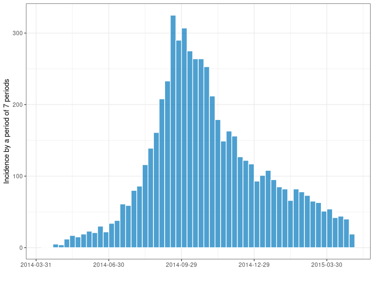
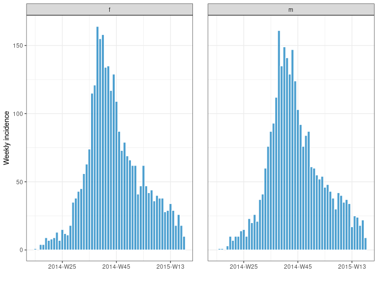
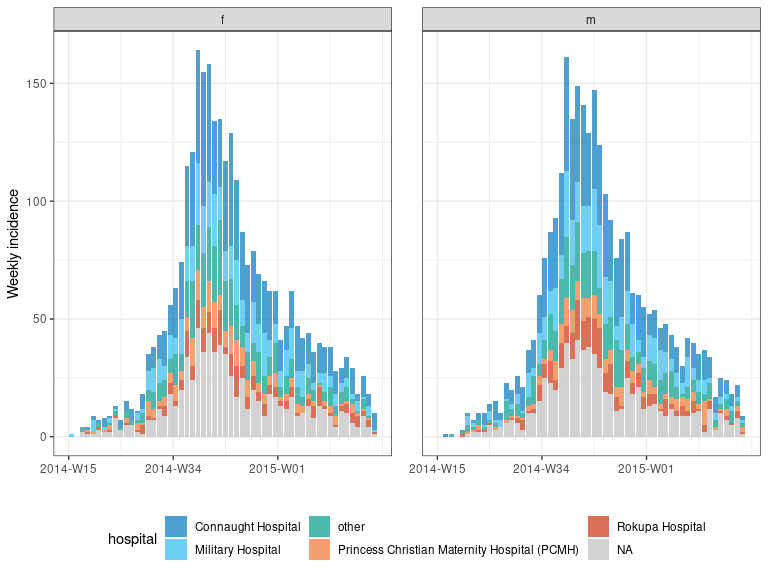

incidence2 is an R package that implements functions and classes to compute, handle and visualise incidences from linelist data. It refocusses the scope of the original incidence package. Unlike the original package, incidence2 concentrates only on the initial calculation, manipulation and plotting of the resultant incidence objects.
Installing the package
The development version, which this documentation refers to, can be installed from GitHub with:
if (!require(remotes)) {
install.packages("remotes")
}
remotes::install_github("reconverse/incidence2", build_vignettes = TRUE)You can install the current version of the package from the releases page or directly from CRAN with:
install.packages("incidence2")Resources
Getting help online
- Bug reports and feature requests should be posted on github using the issue system: https://github.com/reconverse/incidence2/issues.
- Online documentation: https://www.reconverse.org/incidence2.
- All other questions should be posted on the RECON slack channel; see https://www.repidemicsconsortium.org/forum/ for details on how to join.
A quick overview
This short example uses the simulated Ebola Virus Disease (EVD) outbreak from the package outbreaks. It shows how to compute incidence for various time steps and plot the resulting output.
First, we load the data:
library(outbreaks)
library(incidence2)
dat <- ebola_sim_clean$linelist
str(dat)
#> 'data.frame': 5829 obs. of 11 variables:
#> $ case_id : chr "d1fafd" "53371b" "f5c3d8" "6c286a" ...
#> $ generation : int 0 1 1 2 2 0 3 3 2 3 ...
#> $ date_of_infection : Date, format: NA "2014-04-09" ...
#> $ date_of_onset : Date, format: "2014-04-07" "2014-04-15" ...
#> $ date_of_hospitalisation: Date, format: "2014-04-17" "2014-04-20" ...
#> $ date_of_outcome : Date, format: "2014-04-19" NA ...
#> $ outcome : Factor w/ 2 levels "Death","Recover": NA NA 2 1 2 NA 2 1 2 1 ...
#> $ gender : Factor w/ 2 levels "f","m": 1 2 1 1 1 1 1 1 2 2 ...
#> $ hospital : Factor w/ 5 levels "Connaught Hospital",..: 2 1 3 NA 3 NA 1 4 3 5 ...
#> $ lon : num -13.2 -13.2 -13.2 -13.2 -13.2 ...
#> $ lat : num 8.47 8.46 8.48 8.46 8.45 ...Computing and plotting incidence
We compute the weekly incidence:
i_7 <- incidence(dat, date_index = date_of_onset, interval = 7)
i_7
#> An incidence object: 56 x 2
#> 5829 cases from 2014-04-07 to 2015-05-03
#> interval: 7 days
#> cumulative: FALSE
#>
#> date_index count
#> <period> <int>
#> 1 2014-04-07 to 2014-04-13 1
#> 2 2014-04-14 to 2014-04-20 1
#> 3 2014-04-21 to 2014-04-27 5
#> 4 2014-04-28 to 2014-05-04 4
#> 5 2014-05-05 to 2014-05-11 12
#> 6 2014-05-12 to 2014-05-18 17
#> 7 2014-05-19 to 2014-05-25 15
#> 8 2014-05-26 to 2014-06-01 19
#> 9 2014-06-02 to 2014-06-08 23
#> 10 2014-06-09 to 2014-06-15 21
#> # … with 46 more rows
summary(i_7)
#> An incidence object: 56 x 2
#> 5829 cases from 2014-04-07 to 2015-05-03
#> interval: 7 days
#> cumulative: FALSE
#> timespan: 392 days
plot(i_7, color = "white")
Notice how specifying the interval as 7 creates weekly intervals with the coverage displayed by date. incidence() also allows us to create year-weekly groupings with the default being weeks starting on a Monday (following the ISO 8601 date and time standard). incidence() can also compute incidence by specified groups using the groups argument. As an example, below we can compute the weekly incidence by gender and plot in a single, stacked chart:
iw <- incidence(dat, interval = "week", date_index = date_of_onset, groups = gender)
iw
#> An incidence object: 109 x 3
#> 5829 cases from 2014-W15 to 2015-W18
#> interval: 1 (Monday) week
#> cumulative: FALSE
#>
#> date_index gender count
#> <yrwk> <fct> <int>
#> 1 2014-W15 f 1
#> 2 2014-W16 m 1
#> 3 2014-W17 f 4
#> 4 2014-W17 m 1
#> 5 2014-W18 f 4
#> 6 2014-W19 f 9
#> 7 2014-W19 m 3
#> 8 2014-W20 f 7
#> 9 2014-W20 m 10
#> 10 2014-W21 f 8
#> # … with 99 more rows
summary(iw)
#> An incidence object: 109 x 3
#> 5829 cases from 2014-W15 to 2015-W18
#> interval: 1 (Monday) week
#> cumulative: FALSE
#> timespan: 392 days
#>
#> 1 grouped variable
#>
#> gender count
#> <fct> <int>
#> 1 f 2934
#> 2 m 2895
plot(iw, fill = "gender", color = "white")
we can also facet our plot (grouping detected automatically):
facet_plot(iw, n.breaks = 3, color = "white")
It is also possible togroup by multiple variables specifying different facets and fills:
iw2 <- incidence(dat, date_of_onset, interval = "week", groups = c(gender, hospital))
iw2
#> An incidence object: 601 x 4
#> 5829 cases from 2014-W15 to 2015-W18
#> interval: 1 (Monday) week
#> cumulative: FALSE
#>
#> date_index gender hospital count
#> <yrwk> <fct> <fct> <int>
#> 1 2014-W15 f Military Hospital 1
#> 2 2014-W16 m Connaught Hospital 1
#> 3 2014-W17 f <NA> 2
#> 4 2014-W17 f other 2
#> 5 2014-W17 m other 1
#> 6 2014-W18 f <NA> 1
#> 7 2014-W18 f Connaught Hospital 1
#> 8 2014-W18 f Princess Christian Maternity Hospital (PCMH) 1
#> 9 2014-W18 f Rokupa Hospital 1
#> 10 2014-W19 f <NA> 1
#> # … with 591 more rows
summary(iw2)
#> An incidence object: 601 x 4
#> 5829 cases from 2014-W15 to 2015-W18
#> interval: 1 (Monday) week
#> cumulative: FALSE
#> timespan: 392 days
#>
#> 2 grouped variables
#>
#> gender count
#> <fct> <int>
#> 1 f 2934
#> 2 m 2895
#>
#>
#> hospital count
#> <fct> <int>
#> 1 Military Hospital 889
#> 2 Connaught Hospital 1737
#> 3 <NA> 1456
#> 4 other 876
#> 5 Princess Christian Maternity Hospital (PCMH) 420
#> 6 Rokupa Hospital 451
facet_plot(iw2, facets = gender, fill = hospital, n.breaks = 3)
Using an alternative function
The incidence() function wraps the date grouping functionality of the grates package, providing an easy to use interface for constructing incidence objects. Sometimes, however, you may want greater flexibility in choosing how you would like to transform your “date” inputs. Using the function build_incidence(),you can specify the function you wish to apply. We illustrate this below with the excellent clock package:
library(clock)
# create a week function comparable to above approach
isoweek <- function(x) calendar_narrow(as_iso_year_week_day(x), "week")
clock_week_inci <-
build_incidence(
dat,
date_index = date_of_onset,
groups = c(gender, hospital),
FUN = isoweek
)
clock_week_inci
#> An incidence object: 601 x 4
#> date_index gender hospital count
#> <iso_ywd<week>> <fct> <fct> <int>
#> 1 2014-W15 f Military Hospital 1
#> 2 2014-W16 m Connaught Hospital 1
#> 3 2014-W17 f other 2
#> 4 2014-W17 f <NA> 2
#> 5 2014-W17 m other 1
#> 6 2014-W18 f Connaught Hospital 1
#> 7 2014-W18 f Princess Christian Maternity Hospital (PCMH) 1
#> 8 2014-W18 f Rokupa Hospital 1
#> 9 2014-W18 f <NA> 1
#> 10 2014-W19 f Connaught Hospital 2
#> # … with 591 more rows